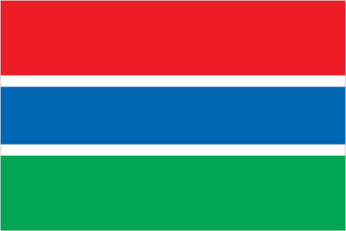
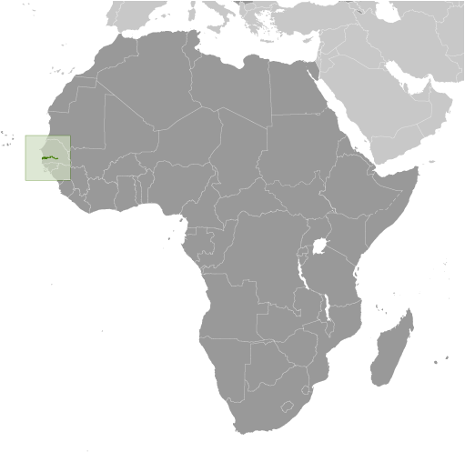
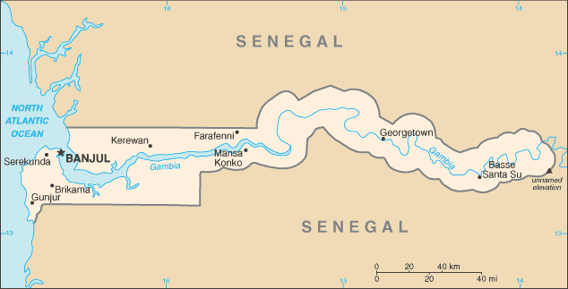

Africa :: GAMBIA, THE
Introduction :: GAMBIA, THE
-
The Gambia gained its independence from the UK in 1965. Geographically surrounded by Senegal, it formed a short-lived Confederation of Senegambia between 1982 and 1989. In 1991 the two nations signed a friendship and cooperation treaty, but tensions have flared up intermittently since then. Yahya JAMMEH led a military coup in 1994 that overthrew the president and banned political activity. A new constitution and presidential election in 1996, followed by parliamentary balloting in 1997, completed a nominal return to civilian rule. JAMMEH was elected president in all subsequent elections including most recently in late 2011. After 22 years of increasingly authoritarian rule, President JAMMEH was defeated in free and fair elections in December 2016. Due to The Gambia’s poor human rights record under JAMMEH, international development partners had distanced themselves, and substantially reduced aid to the country. These channels may re-open under the administration of President
Geography :: GAMBIA, THE
-
Western Africa, bordering the North Atlantic Ocean and Senegal13 28 N, 16 34 WAfricatotal: 11,300 sq kmland: 10,120 sq kmwater: 1,180 sq kmcountry comparison to the world: 166slightly less than twice the size of Delawaretotal: 749 kmborder countries (1): Senegal 749 km80 kmterritorial sea: 12 nmcontiguous zone: 18 nmexclusive fishing zone: 200 nmcontinental shelf: extent not specifiedtropical; hot, rainy season (June to November); cooler, dry season (November to May)flood plain of the Gambia River flanked by some low hillsmean elevation: 34 melevation extremes: lowest point: Atlantic Ocean 0 mhighest point: unnamed elevation 53 mfish, clay, silica sand, titanium (rutile and ilmenite), tin, zirconagricultural land: 56.1%arable land 41%; permanent crops 0.5%; permanent pasture 14.6%forest: 43.9%other: 0% (2011 est.)50 sq km (2012)settlements are found scattered along the Gambia River; the largest communities, including the capital of Banjul, and the country's largest city, Serekunda, are found at the mouth of the Gambia River along the Atlantic coastdroughtsdeforestation; desertification; water-borne diseases prevalentparty to: Biodiversity, Climate Change, Climate Change-Kyoto Protocol, Desertification, Endangered Species, Hazardous Wastes, Law of the Sea, Ozone Layer Protection, Ship Pollution, Wetlands, Whalingsigned, but not ratified: none of the selected agreementsalmost an enclave of Senegal; smallest country on the African mainland
People and Society :: GAMBIA, THE
-
2,051,363 (July 2017 est.)country comparison to the world: 146noun: Gambian(s)adjective: GambianMandinka/Jahanka 34%, Fulani/Tukulur/Lorobo 22.4%, Wolof 12.6%, Jola/Karoninka 10.7%, Serahuleh 6.6%, Serer 3.2%, Manjago 2.1%, Bambara 1%, Creole/Aku Marabout 0.7%, other 0.9%, non-Gambian 5.2%, no answer 0.6% (2013 est.)English (official), Mandinka, Wolof, Fula, other indigenous vernacularsMuslim 95.7%, Christian 4.2%, none 0.1%, no answer 0.1% (2013 est.)The Gambia’s youthful age structure – almost 60% of the population is under the age of 25 – is likely to persist because the country’s total fertility rate remains strong at nearly 4 children per woman. The overall literacy rate is around 55%, and is significantly lower for women than for men. At least 70% of the populace are farmers who are reliant on rain-fed agriculture and cannot afford improved seeds and fertilizers. Crop failures caused by droughts between 2011 and 2013 have increased poverty, food shortages, and malnutrition.The Gambia is a source country for migrants and a transit and destination country for migrants and refugees. Since the 1980s, economic deterioration, drought, and high unemployment, especially among youths, have driven both domestic migration (largely urban) and migration abroad (legal and illegal). Emigrants are largely skilled workers, including doctors and nurses, and provide a significant amount of remittances. The top receiving countries for Gambian emigrants are Spain, the US, Nigeria, Senegal, and the UK. While the Gambia and Spain do not share historic, cultural, or trade ties, rural Gambians have migrated to Spain in large numbers because of its proximity and the availability of jobs in its underground economy (this flow slowed following the onset of Spain’s late 2007 economic crisis).The Gambia’s role as a host country to refugees is a result of wars in several of its neighboring West African countries. Since 2006, refugees from the Casamance conflict in Senegal have replaced their pattern of flight and return with permanent settlement in The Gambia, often moving in with relatives along the Senegal-Gambia border. The strain of providing for about 7,400 Casamance refugees has increased poverty among Gambian villagers.0-14 years: 37.44% (male 385,646/female 382,328)15-24 years: 20.47% (male 207,611/female 212,366)25-54 years: 34.4% (male 345,788/female 359,976)55-64 years: 4.2% (male 41,295/female 44,865)65 years and over: 3.48% (male 33,153/female 38,335) (2017 est.)total dependency ratio: 92.3youth dependency ratio: 87.8elderly dependency ratio: 4.5potential support ratio: 22.3 (2015 est.)total: 21 yearsmale: 20.7 yearsfemale: 21.3 years (2017 est.)country comparison to the world: 1862.05% (2017 est.)country comparison to the world: 4329.4 births/1,000 population (2017 est.)country comparison to the world: 417 deaths/1,000 population (2017 est.)country comparison to the world: 133-1.9 migrant(s)/1,000 population (2017 est.)country comparison to the world: 159settlements are found scattered along the Gambia River; the largest communities, including the capital of Banjul, and the country's largest city, Serekunda, are found at the mouth of the Gambia River along the Atlantic coasturban population: 60.8% of total population (2017)rate of urbanization: 3.96% annual rate of change (2015-20 est.)BANJUL (capital) 504,000 (2015)at birth: 1.03 male(s)/female0-14 years: 1.01 male(s)/female15-24 years: 0.98 male(s)/female25-54 years: 0.96 male(s)/female55-64 years: 0.93 male(s)/female65 years and over: 0.88 male(s)/femaletotal population: 0.98 male(s)/female (2016 est.)20.9 yearsnote: median age at first birth among women 25-29 (2013 est.)706 deaths/100,000 live births (2015 est.)country comparison to the world: 9total: 60.2 deaths/1,000 live birthsmale: 65.6 deaths/1,000 live birthsfemale: 54.7 deaths/1,000 live births (2017 est.)country comparison to the world: 17total population: 65.1 yearsmale: 62.8 yearsfemale: 67.5 years (2017 est.)country comparison to the world: 1803.52 children born/woman (2017 est.)country comparison to the world: 439% (2013)7.3% of GDP (2014)country comparison to the world: 730.11 physicians/1,000 population (2008)1.1 beds/1,000 population (2011)improved:urban: 94.2% of populationrural: 84.4% of populationtotal: 90.2% of populationunimproved:urban: 5.8% of populationrural: 15.6% of populationtotal: 9.8% of population (2015 est.)improved:urban: 61.5% of populationrural: 55% of populationtotal: 58.9% of populationunimproved:urban: 38.5% of populationrural: 45% of populationtotal: 41.1% of population (2015 est.)1.7% (2016 est.)country comparison to the world: 2920,000 (2016 est.)country comparison to the world: 771,100 (2016 est.)country comparison to the world: 61degree of risk: very highfood or waterborne diseases: bacterial and protozoal diarrhea, hepatitis A, and typhoid fevervectorborne diseases: malaria and dengue feverwater contact disease: schistosomiasisrespiratory disease: meningococcal meningitisanimal contact disease: rabies (2016)10.3% (2016)country comparison to the world: 13816.4% (2013)country comparison to the world: 382.8% of GDP (2013)country comparison to the world: 109definition: age 15 and over can read and writetotal population: 55.5%male: 63.9%female: 47.6% (2015 est.)total: 9 yearsmale: 9 yearsfemale: 9 years (2010)total: 44.3%male: 38.1%female: 49.5% (2012 est.)
Government :: GAMBIA, THE
-
conventional long form: Republic of The Gambiaconventional short form: The Gambiaetymology: named for the Gambia River that flows through the heart of the countrypresidential republicname: Banjulgeographic coordinates: 13 27 N, 16 34 Wtime difference: UTC 0 (5 hours ahead of Washington, DC, during Standard Time)5 regions, 1 city*, and 1 municipality**; Banjul*, Central River, Kanifing**, Lower River, North Bank, Upper River, West Coast18 February 1965 (from the UK)Independence Day, 18 February (1965)history: previous 1965 (independence act), 1970; latest adopted 8 April 1996, approved by referendum 8 August 1996, effective 16 January 1997amendments: proposed by the National Assembly; passage requires at least three-fourths majority vote by the Assembly membership in each of several readings and approval by the president of the republic; a referendum is required for amendments affecting national sovereignty, fundamental rights and freedoms, government structures and authorities, taxation, and public funding; passage by referendum requires participation of at least 50% of eligible voters and approval by at least 75% of votes cast; amended 2001, 2004, 2010 (2017)mixed legal system of English common law, Islamic law, and customary lawaccepts compulsory ICJ jurisdiction with reservations; accepts ICCt jurisdictioncitizenship by birth: yescitizenship by descent: yesdual citizenship recognized: noresidency requirement for naturalization: 5 years18 years of age; universalchief of state: President Adama BARROW (since 19 January 2017); Vice President Fatoumata JALLOW-TAMBAJANG (since 23 January 2017); note - the president is both chief of state and head of governmenthead of government: President Adama BARROW (since 19 January 2017); Vice President Fatoumata JALLOW-TAMBAJANG (since 23 January 2017)cabinet: Cabinet appointed by the presidentelections/appointments: president directly elected by simple majority popular vote for a 5-year term (no term limits); election last held on 24 November 2011 (next to be held on 1 December 2016); vice president appointed by the presidentelection results: Adama BARROW elected president; percent of vote - Adama BARROW (Coalition 2016) 43.3%, Yahya JAMMEH (APRC)39.6%, Mamma KANDEH (GDC) 17.1%description: unicameral National Assembly (58 seats; 53 members directly elected in single-seat constituencies by simple majority vote and 5 appointed by the president; members serve 5-year terms)elections: last held on 6 April 2017 (next to be held in 2022)election results: percent of vote by party - UDP 37.5%, GDC 17.4%, APRC 16%, PDOIS 9%, NRP 6.3%, PPP 2.5%, independent 9.6%; seats by party - UDP 31, APRC 5, GDC 5, NRP 5, PDOIS 4, PPP 2, independent 1highest court(s): Supreme Court of The Gambia (consists of the chief justice and 6 justices; court sessions held with 5 justices)judge selection and term of office: justices appointed by the president after consultation with the Judicial Service Commission, a 6-member independent body of high-level judicial officials, a presidential appointee, and a National Assembly appointee; justices appointed for life or until mandatory retirement agesubordinate courts: Court of Appeal; High Court; Special Criminal Court; Khadis or Muslim courts; district tribunals; magistrates courtsAlliance for Patriotic Reorientation and Construction or APRC [Fabakary JATTA]Coalition 2016 [collective leadership] (electoral coalition including UDP, PDOIS, NRP, GMC, GDC, PPP, GPDP)Gambia Democratic Congress or GDC [Mama KANDEH]Gambia Moral Congress or GMC [Mai FATTY]Gambia Party for Democracy and Progress or GPDP [Henry GOMEZ]National Reconciliation Party or NRP [Samba JALLOW]National Convention Party or NCP [Ebrima Janko SANYANG]People's Democratic Organization for Independence and Socialism or PDOIS [Sidia JATTA]People's Progressive Party or PPP [Yaya CEESAY)]United Democratic Party or UDP [Ousainou DARBOE]The Association of Non-Governmental Organizations or TANGOFemale Lawyers Association of Gambia or FLAGGambia Committee on Traditional Practices or GAMCOTRAPGambia Press Union or GPUWest African Peace Building Network-Gambian Chapter or WANEB-GAMBIAYouth Employment Network Gambia or YENGambiaother: special needs group advocates; teachers and principalsACP, AfDB, AU, ECOWAS, FAO, G-77, IBRD, ICAO, ICCt, ICRM, IDA, IDB, IFAD, IFC, IFRCS, ILO, IMF, IMO, Interpol, IOC, IOM, IPU, ISO (correspondent), ITSO, ITU, ITUC (NGOs), MIGA, MINUSMA, NAM, OIC, OPCW, UN, UNAMID, UNCTAD, UNESCO, UNIDO, UNMIL, UNOCI, UNWTO, UPU, WCO, WFTU (NGOs), WHO, WIPO, WMO, WTOchief of mission: Ambassador (vacant); Charge d'Affaires Manneh HAMBA (since 3 May 2017)chancery: 2233 Wisconsin Avenue NW, Georgetown Plaza, Suite 240, Washington, DC 20007telephone: [1] (202) 785-1379, 1399, 1425FAX: [1] (202) 342-0240chief of mission: Ambassador C. Patricia ALSUP (since 11 January 2016)embassy: Kairaba Avenue, Fajara, Banjulmailing address: P.M.B. 19, Banjultelephone: [220] 439-2856FAX: [220] 439-2475three equal horizontal bands of red (top), blue with white edges, and green; red stands for the sun and the savannah, blue represents the Gambia River, and green symbolizes forests and agriculture; the white stripes denote unity and peacelion; national colors: red, blue, green, whitename: "For The Gambia, Our Homeland"lyrics/music: Virginia Julie HOWE/adapted by Jeremy Frederick HOWEnote: adopted 1965; the music is an adaptation of the traditional Mandinka song "Foday Kaba Dumbuya"
Economy :: GAMBIA, THE
-
The government has invested in the agriculture sector because three-quarters of the population depends on the sector for its livelihood and agriculture provides for about one-third of GDP, making The Gambia largely reliant on sufficient rainfall. The agricultural sector has untapped potential - less than half of arable land is cultivated and agricultural productivity is low. Small-scale manufacturing activity features the processing of cashews, groundnuts, fish, and hides. The Gambia's reexport trade accounts for almost 80% of goods exports and China has been its largest trade partner for both exports and imports for several years.The Gambia has sparse natural resource deposits. It relies heavily on remittances from workers overseas and tourist receipts. Remittance inflows to The Gambia amount to about one-fifth of the country’s GDP. The Gambia's location on the ocean and proximity to Europe has made it one of the most frequented tourist destinations in West Africa, boosted by private sector investments in eco-tourism and facilities. Tourism normally brings in about 20% of GDP, but it suffered in 2014 from tourists’ fears of Ebola virus in neighboring West African countries. Unemployment and underemployment remain high.Economic progress depends on sustained bilateral and multilateral aid, on responsible government economic management, and on continued technical assistance from multilateral and bilateral donors. International donors and lenders were concerned about the quality of fiscal management under the administration of former President Yahya JAMMEH, who reportedly stole hundreds of millions of dollars of the country’s funds during his 22 years in power, but anticipate significant improvements under the new administration of President Adama BARROW, who assumed power in early 2017. As of April 2017, the IMF, the World Bank, the European Union, and the African Development Bank were all negotiating with the new government of The Gambia to provide financial support in the coming months to ease the country’s financial crisis.The country’s GDP contracted in 2016 largely as a result of the limited availability of foreign exchange, weak agricultural output, the border closure with Senegal during the first half of the year, and a slowdown in tourism during the political impasse that occurred at the height of the tourist season. The country faces a large fiscal deficit and a high domestic debt burden that has crowded out private sector investment and driven interest rates to new highs. The new government has committed to taking steps to reduce the deficit, including through expenditure caps, debt consolidation, and reform of state-owned enterprises.$3.418 billion (2016 est.)$3.302 billion (2015 est.)$3.132 billion (2014 est.)note: data are in 2016 dollarscountry comparison to the world: 182$965 million (2016 est.)2.2% (2016 est.)4.3% (2015 est.)0.9% (2014 est.)country comparison to the world: 114$1,700 (2016 est.)$1,700 (2015 est.)$1,700 (2014 est.)note: data are in 2016 dollarscountry comparison to the world: 2169.8% of GDP (2016 est.)4.7% of GDP (2015 est.)10.1% of GDP (2014 est.)country comparison to the world: 157household consumption: 86.3%government consumption: 10.4%investment in fixed capital: 19.9%investment in inventories: -7%exports of goods and services: 19.9%imports of goods and services: -29.5% (2016 est.)agriculture: 21%industry: 13.8%services: 65.2% (2016 est.)rice, millet, sorghum, peanuts, corn, sesame, cassava (manioc, tapioca), palm kernels; cattle, sheep, goatspeanuts, fish, hides, tourism, beverages, agricultural machinery assembly, woodworking, metalworking, clothing-6.1% (2016 est.)country comparison to the world: 190777,100 (2007 est.)country comparison to the world: 151agriculture: 75%industry: 19%services: 6% (1996)NA%48.4% (2010 est.)lowest 10%: 2%highest 10%: 36.9% (2003)50.2 (1998)country comparison to the world: 17revenues: $192.9 millionexpenditures: $380.6 million (2016 est.)20% of GDP (2016 est.)country comparison to the world: 155-19.5% of GDP (2016 est.)country comparison to the world: 215116.1% of GDP (2016 est.)110.2% of GDP (2015 est.)country comparison to the world: 11calendar year7.2% (2016 est.)6.8% (2015 est.)country comparison to the world: 1909% (31 December 2009)11% (31 December 2008)country comparison to the world: 3430.4% (31 December 2016 est.)30.1% (31 December 2015 est.)country comparison to the world: 7$279.6 million (31 December 2016 est.)$261.2 million (31 December 2015 est.)country comparison to the world: 181$529.9 million (31 December 2016 est.)$507.4 million (31 December 2015 est.)country comparison to the world: 184$496.7 million (31 December 2016 est.)$475.2 million (31 December 2015 est.)country comparison to the world: 176$NA$-86 million (2016 est.)$-131.7 million (2015 est.)country comparison to the world: 73$106.6 million (2016 est.)$108.3 million (2015 est.)country comparison to the world: 195peanut products, fish, cotton lint, palm kernelsMali 36.3%, Guinea 24.5%, Senegal 12.3%, China 11.7%, Guinea-Bissau 5.8% (2016)$326.7 million (2016 est.)$370.2 million (2015 est.)country comparison to the world: 198foodstuffs, manufactures, fuel, machinery and transport equipmentCote dIvoire 13%, Brazil 12.3%, China 11%, Belgium 8.6%, India 5.7%, Spain 4.7%, Senegal 4.6% (2016)$87.64 million (31 December 2016 est.)$111 million (31 December 2015 est.)country comparison to the world: 166g: $571.2 million (31 December 2016 est.)$526.7 million (31 December 2015 est.)country comparison to the world: 176dalasis (GMD) per US dollar -43.8846 (2016 est.)43.8846 (2015 est.)41.89 (2014 est.)41.733 (2013 est.)32.08 (2012 est.)
Energy :: GAMBIA, THE
-
population without electricity: 1,200,000electrification - total population: 36%electrification - urban areas: 60%electrification - rural areas: 2% (2013)240 million kWh (2015 est.)country comparison to the world: 184223.2 million kWh (2015 est.)country comparison to the world: 1860 kWh (2016 est.)country comparison to the world: 1390 kWh (2016 est.)country comparison to the world: 153114,000 kW (2015 est.)country comparison to the world: 177100% of total installed capacity (2015 est.)country comparison to the world: 60% of total installed capacity (2015 est.)country comparison to the world: 940% of total installed capacity (2015 est.)country comparison to the world: 1760% of total installed capacity (2015 est.)country comparison to the world: 1800 bbl/day (2016 est.)country comparison to the world: 1400 bbl/day (2014 est.)country comparison to the world: 1280 bbl/day (2014 est.)country comparison to the world: 1310 bbl (1 January 2017 es)country comparison to the world: 1390 bbl/day (2014 est.)country comparison to the world: 1473,600 bbl/day (2015 est.)country comparison to the world: 18341.62 bbl/day (2014 est.)country comparison to the world: 1253,552 bbl/day (2014 est.)country comparison to the world: 1740 cu m (2013 est.)country comparison to the world: 1390 cu m (2013 est.)country comparison to the world: 1840 cu m (2013 est.)country comparison to the world: 1070 cu m (2013 est.)country comparison to the world: 1280 cu m (1 January 2014 es)country comparison to the world: 143500,000 Mt (2013 est.)country comparison to the world: 184
Communications :: GAMBIA, THE
-
total subscriptions: 37,969subscriptions per 100 inhabitants: 2 (July 2016 est.)country comparison to the world: 158total: 2,838,127subscriptions per 100 inhabitants: 141 (July 2016 est.)country comparison to the world: 146general assessment: adequate microwave radio relay and open-wire network; state-owned Gambia Telecommunications partially privatized in 2007domestic: combined fixed-line and mobile-cellular teledensity, aided by multiple mobile-cellular providers, is over 140 per 100 personsinternational: country code - 220; microwave radio relay links to Senegal and Guinea-Bissau; a landing station for the Africa Coast to Europe (ACE) undersea fiber-optic cable completed in 2011 and launched in 2012; satellite earth station - 1 Intelsat (Atlantic Ocean) (2016)state-owned, single-channel TV service; state-owned radio station and 15 privately owned radio stations; 6 community radio stations; transmissions of multiple international broadcasters are available, some via shortwave radio; cable and satellite TV subscription services are obtainable in some parts of the country (2015).gmtotal: 371,785percent of population: 18.5% (July 2016 est.)country comparison to the world: 147
Transportation :: GAMBIA, THE
-
C5 (2016)1 (2013)country comparison to the world: 218total: 1over 3,047 m: 1 (2017)total: 3,740 kmpaved: 711 kmunpaved: 3,029 km (2011)country comparison to the world: 159390 km (on River Gambia; small oceangoing vessels can reach 190 km) (2010)country comparison to the world: 88total: 4by type: passenger/cargo 3, petroleum tanker 1 (2010)country comparison to the world: 131major seaport(s): Banjul
Military and Security :: GAMBIA, THE
-
1.48% of GDP (2015)1.72% of GDP (2014)1.15% of GDP (2013)1.22% of GDP (2012)Office of the Chief of Defense Staff: Gambian National Army (GNA), Gambian Navy (GN), Republican National Guard (RNG) (2010)18 years of age for male and female voluntary military service; no conscription; service obligation 6 months (2012)
Transnational Issues :: GAMBIA, THE
-
attempts to stem refugees, cross-border raids, arms smuggling, and other illegal activities by separatists from southern Senegal's Casamance region, as well as from conflicts in other west African statesrefugees (country of origin): 7,530 (Senegal) (2017)current situation: The Gambia is a source and destination country for women and children subjected to forced labor and sex trafficking; Gambian women, girls, and, to a lesser extent, boys are exploited for prostitution and domestic servitude; women, girls, and boys from West African countries are trafficked to The Gambia for commercial sexual exploitation, particularly by European sex tourists; boys in some Koranic schools are forced into street vending or begging; some Gambian children have been identified as victims of forced labor in neighboring West African countriestier rating: Tier 3 – The Gambia does not fully comply with the minimum standards for the elimination of trafficking and is not making significant efforts to do so; the government demonstrated minimal anti-trafficking law enforcement efforts, investigating one trafficking case but not prosecuting or convicting any offenders in 2014; authorities did not investigate, prosecute, or convict any government employees complicit in trafficking, although corruption was a serious problem; the government identified and repatriated 19 Gambian girls subjected to domestic servitude in Lebanon but did not identify or provide protective services to any trafficking victims in The Gambia; a government program continued to provide resources and financial support to 12 Koranic schools on the condition that their students were not forced to beg (2015)